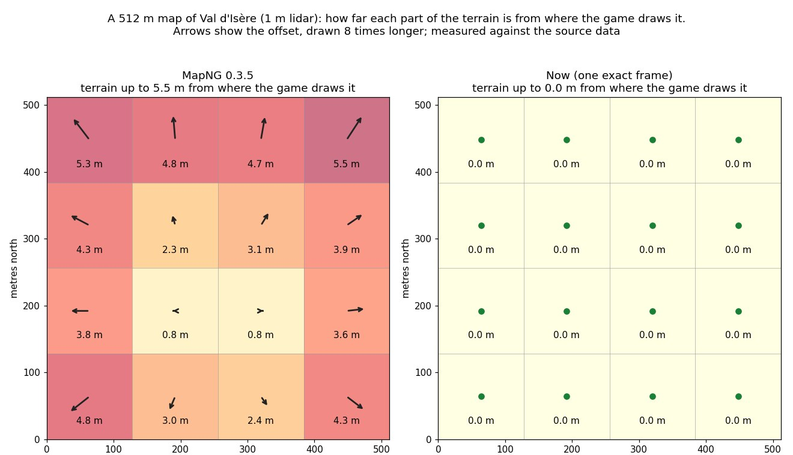

MapNG
MapNGPreview. This page is being written while 0.3.6 is being finished. Parts marked "in progress" are not done yet.
Maps of any shape
Step 1 now starts with one tile, the same square as before. Add a tile puts another beside it at the same size. Keep tiles together on a grid, or move them freely with snapping, and drag each one on the map. Generate then builds one map over all of them: an L, a strip along a valley, a ring round a lake.
- One level, not a batch. The tiles are built as a single level with its roads, buildings and ground running straight through. Nothing has to be stitched afterwards.
- Only the ground you asked for. Outside the tiles there is no terrain, and map data is cut exactly at the edge of the ground: a road, a railway or a river crossing a narrow part is kept, and nothing hangs over empty space.
- Drawn where they are built. Each tile on the map is drawn exactly where its ground will be, at any latitude.
- Shared and saved. A share code, saved settings and the desktop app's Modify all carry the tiles. Up to 64 tiles.
A shape that is not one full square is built with the ground as models (introduced in 0.3.5), so the level has no terrain outside your tiles.
In progress. The top-level "Single tile" and "Batch job" tabs are being retired in favour of tiles. Batch mode was made for exporting assets, and people were using it to build huge levels, which it was never meant for. The export step keeps its choice of what to export.
Road mode: a level along a road
Switch Area & detail to Road mode and click a road on the map. MapNG follows it both ways by its name or number, and you get a stretch with a handle at each end and a width either side, from 50 m to 2 km. Generate builds the level over that corridor only.
- Handles that follow the roads. Drag a handle along the road to shorten the stretch. Drop it farther away, up to 20 km at a time, and the stretch follows the road network to it, keeping to the road you picked. Went the wrong way? Drag the handle back along the line.
- It stays on your road. The stretch does not wander onto another road that shares a number, does not turn back along the other side of a dual carriageway, and goes straight through roundabouts.
- Quick to answer. Picking and routing read only the roads of the area, not everything Generate needs: a click answers in a fraction of a second, and an area already read is not read again.
- The width is real. The corridor is measured on the ground, so it is as wide at the far end of a long road as in the middle. (Before this was fixed, on a 30 km road at latitude 60 the corridor was over 100 m off and the road could leave it.)
Long and diagonal shapes, built in pieces
A long diagonal road has a small area but a huge bounding box, and it used to be refused as "too big". Such shapes are now built in pieces of 2 km along the shape and joined into one level. Roads cut where two pieces meet are joined back into one road, and the game's traffic drives across.
- The export builds every piece from what Generate already downloaded. It downloads nothing.
- The level's report now covers the whole level and every piece, and the progress shows which piece is being built, in all seven languages.
- If a piece fails, the message says which one and at which step.
Not finished. Where pieces meet in a dense city with bridges or tunnels close to the join, the ground on the two sides can still disagree, because each piece shapes its roads from its own part of the road network. A long bridge or tunnel reaching far past its piece is cut. Use this for country roads and open ground for now.
Terrain and map data, exactly where the game draws them
While checking the new shapes we measured where a map's terrain really ends up, and found every level slightly out. All of it is fixed at the root, for every map:
- Every level was a little small. A map was fetched 4 m wider on every side than the game then drew it: 1.5 % on a 512 m map, 0.2 % on a 4 km one.
- Terrain up to a square off the map data. Heights were sampled on one grid and read on another.
- The default elevation source was half a pixel off. The free lidar source (Mapterhorn) sat half a source pixel north-west of its place: 0.4 m on 1 m lidar, about 10 m on the 30 m data.
- Flat-earth shortcuts. Tiles, long shapes and the road corridor each used a fixed number of metres per degree. They now all use one definition with the real figure for the map's latitude.

Checked in the game as well: on a test level with untouched terrain, 961 points of the game's own ground height match the source elevation at their real positions to within a millimetre, and the level's roads lie on OpenStreetMap's lines (median 0 cm, worst 6 cm). A level built in pieces at latitude 60 reads the same.
What this means for you: a level made from the same place again will sit a little differently (up to a square, plus the few metres at the edges). Levels you already exported are not changed.
A full security pass
The website, the desktop app, the update system and the way releases are built were all reviewed again. No break-in was found; these were weaknesses, and they are closed:
- Updates are checked before they are offered, and the download is tied to that check. On test builds the app could check one release and then download another. It now refuses to download anything but the update it verified.
- Released files cannot be swapped. Once a release is published on GitHub its files and its tag are locked.
- The signing keys are out of reach. They can only be used by a release build started from a version tag, and the step that signs the update list no longer shares a machine with any third-party code.
- The signed program cannot be repurposed. MapNG.exe can no longer be run as a general script runner by other software on your computer.
- The app asks for less. It may use your location (if you ask it to), the clipboard and full screen. Camera, microphone, notifications and everything else are refused outright.
- Only listed addresses, redirects included. The export already connected only to the addresses on MapNG's published list. A listed server can no longer pass it on to one that is not.
- Newer foundations. Electron and the bundled Node were moved to their current security releases.
- The report service is harder to flood, and reports can only be read through the developer's own sign-in.
More on how MapNG is built and what it sends where: Security and Your data.
Fixes
- "Generate does nothing" with your own elevation file. With an uploaded elevation file the app always offered Generate, then decided nothing had changed. A map data file loaded after generating was ignored the same way. Both now generate again. (Thanks for the report.)
- "Settings changed since generating" now follows everything that changes the map, tiles and a picked road included.
- A shared road comes back with its ends where they were.
- Switching tiles from free to together puts every tile back on the grid.
- The level built in pieces could download map data again if you exported more than half an hour after generating. It no longer does.
Still being worked on
- Pieces of a long level meeting cleanly in cities, where bridges and tunnels are close to a join.
- Previews that show only the shape you picked, and a minimap to match.
- A Reset button, on the website and in the desktop app, that puts everything back to a fresh start.
- Streets standing on a narrow ridge with jagged sides in steep towns, walls along tunnel approaches, and the other items carried over from 0.3.5's list.